Four ideas about R’s data structures are worth a whole slide each, and each one is easier to teach as a picture than as a paragraph. This vignette collects them: names versus indices, the sense in which a data frame is a list, the sense in which an array is a stack of matrices, and how to read an accessor straight off a cell. Every picture below is one you can drop into a lecture as is.
Names or indices
A vector can be addressed two ways, and paintr shows you which one you get. Give it a named vector and it draws each name as the accessor you would type, ["NY"] rather than a bare NY, because that is exactly what you write to reach a value.
pop <- c(NY = 8.3, LA = 3.9, Chicago = 2.7)
paint_vector(pop)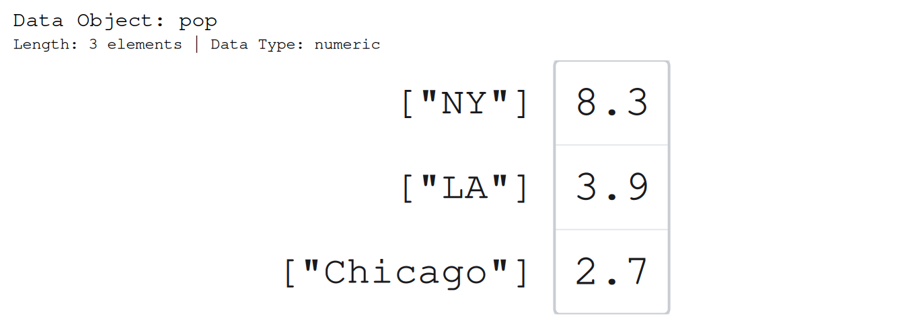
Take the names away and there is nothing to type but a position, so the picture falls back to [1] [2] [3].
paint_vector(c(3.1, 4.1, 5.9))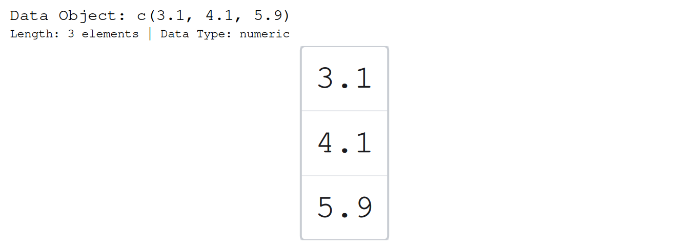
That is the whole lesson in two frames: a name is a label you chose, an index is the position that is always there. A matrix works the same way in two dimensions. Give it dimnames and it draws them on both axes.
m <- matrix(c(12, 7, 4, 9, 15, 2), nrow = 2, byrow = TRUE,
dimnames = list(c("spring", "summer"), c("mon", "tue", "wed")))
paint_matrix(m)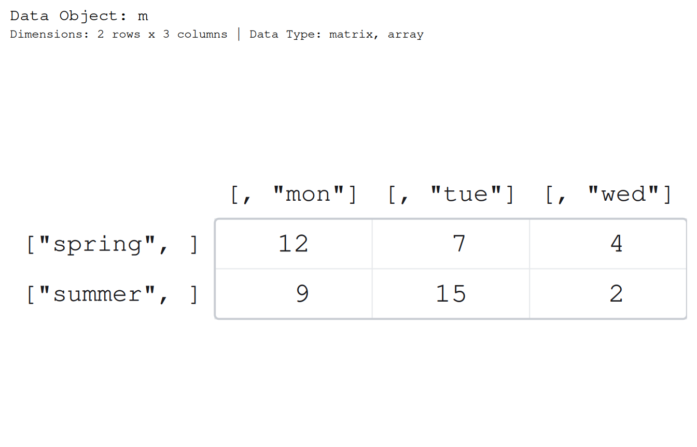
The margins already carry the accessor form: the rows read ["spring", ] and the columns [, "mon"], each a one-sided subscript that names just its own axis. When you want the accessor that reaches a single cell, ask for it: show_indices = "cell" prints the full two-sided subscript under each value. The margins do not go away, so a student sees each axis named on its own and, beneath the number it points at, the combined ["spring", "mon"] that pulls out exactly that value.
paint_matrix(m, show_indices = "cell")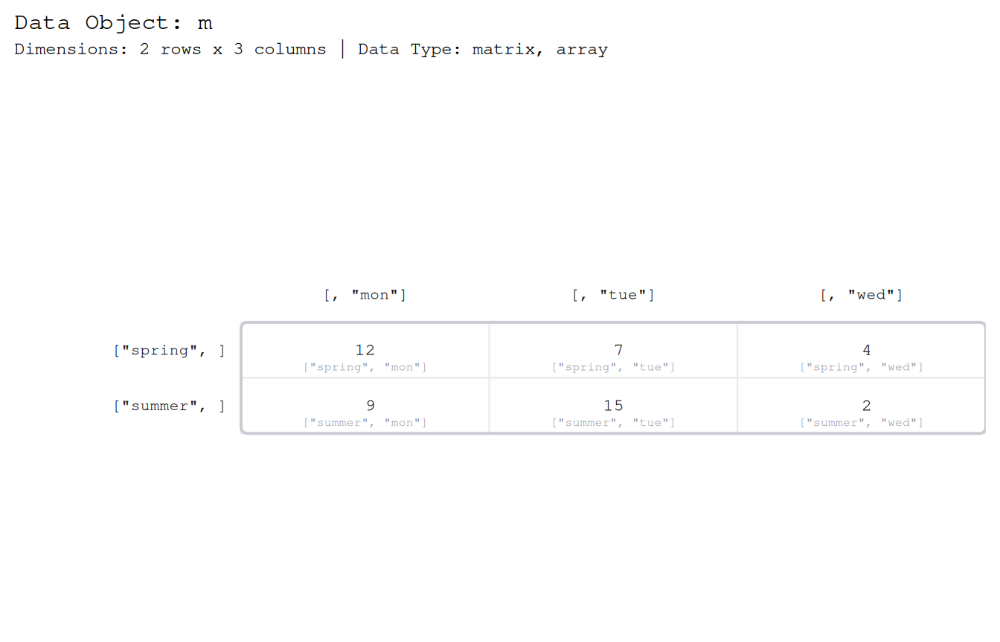
A data frame is a list
This is the strongest single idea in the set, and paintr makes it visible. A data frame is a list whose elements all happen to share a length. Here is a small one.
df <- data.frame(x = c(1.5, 2.5, 3.5), grp = c("a", "b", "c"))
paint_data_frame(df)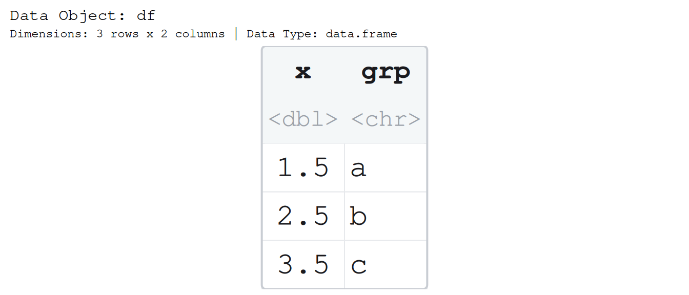
Now strip the data-frame class away with as.list() and paint the bare list. It is the same picture: the same columns, the same values, the same rectangle.
paint_list(as.list(df))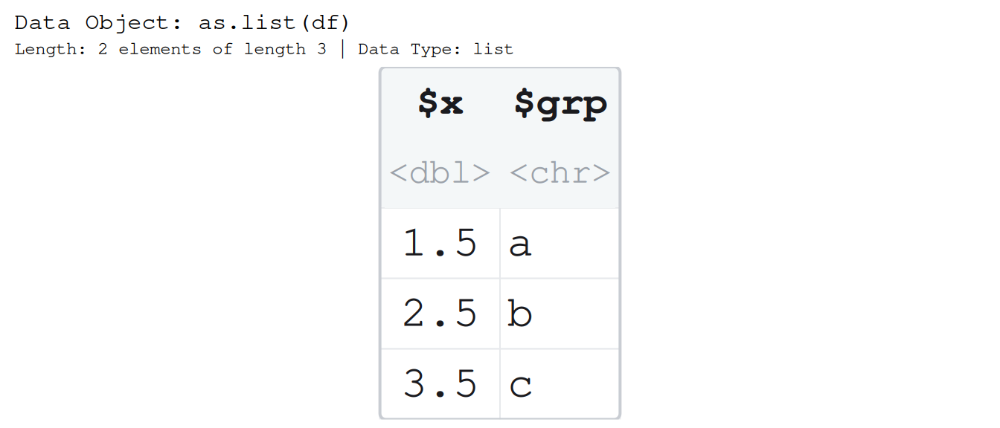
The rectangle is not decoration. The list draws an outline only because its elements share a length – that shared length is exactly the thing that makes a list a data frame. Break it, and watch the rectangle break with it. Here we shorten one column so the elements no longer line up.
broken <- as.list(df)
broken$x <- broken$x[1:2]
paint_list(broken)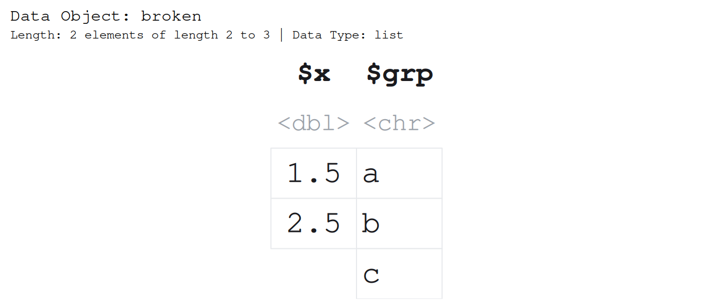
The outline is gone, because the object is no longer rectangular. data.frame() would have refused to build this. That refusal, and this broken picture, are the same rule seen from two sides: a data frame is a list that stayed a rectangle.
The tight rectangle is a convenience, though, not the truth of the object. A list is a bag of independent vectors that happen, here, to line up. Set gap and the columns move apart to say so – the outline, the mark of a table, falls away.
paint_list(as.list(df), gap = 0.5)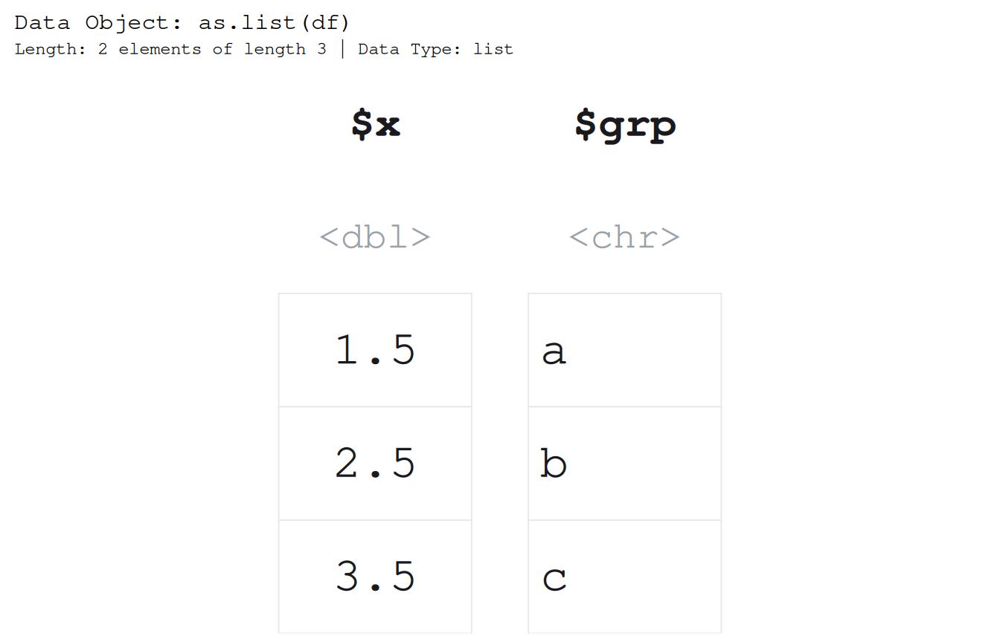
Same values, same columns, but set side by side rather than fused into a table – which is what a list was all along.
An array is a stack of matrices
A 2-D thing is a matrix; add a dimension and you have a stack of them. paintr draws that stack literally – one block per slice, each block a matrix in its own right, all drawn at one shared font size so the blocks are comparable.
a <- array(1:12, dim = c(2, 3, 2))
paint_array(a)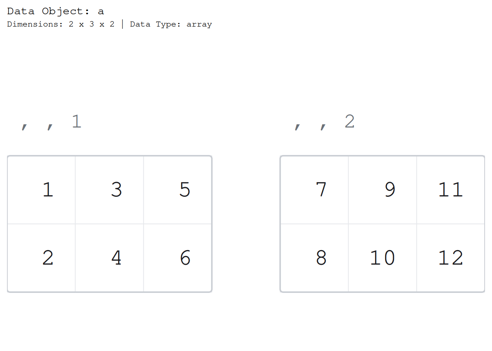
Each block carries the , , k title that R’s own print() uses, so the first block is titled , , 1 and the second , , 2. Read a block on its own and it is an ordinary matrix; the title tells you which slice of the stack you are looking at. That is all a third dimension is: a pile of matrices with a label on each.
Reading an accessor off the picture
The label under a cell is not a caption. It is the exact expression you would type to pull that one value out, printed under the value it returns. This is worth a slide on its own, because it turns the accessor students get wrong most into something they can just read.
Take a list. l[2] is a list, l[[2]] is the vector inside it, and l[[2]][3] is a single value – three expressions that look alike and mean different things. Ask for the indices and paintr writes the right one under each number.
l <- list(a = c(10, 20, 30), b = c(1.5, 2.5))
paint_list(l, show_indices = "cell")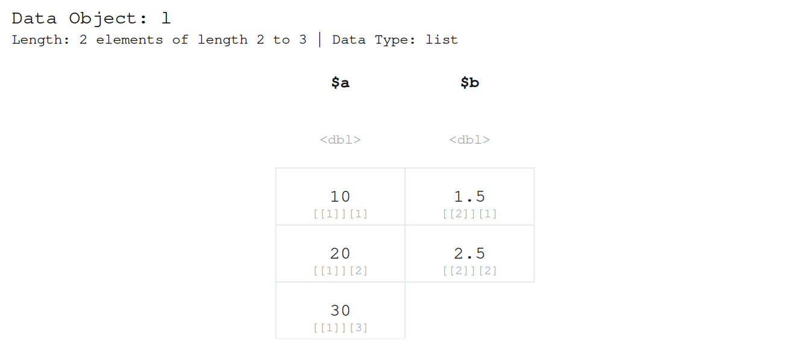
Under the 2.5 it prints l[[2]][2]: double brackets to reach into the list, single bracket to pick the element. There is no faster way to settle the single-versus-double-bracket confusion than to show the working accessor sitting under the value it produces.
The same trick reads a subscript off an array. Ask a 3-D array for its indices and each cell is labelled with its full three-number subscript.
paint_array(a, show_indices = "cell")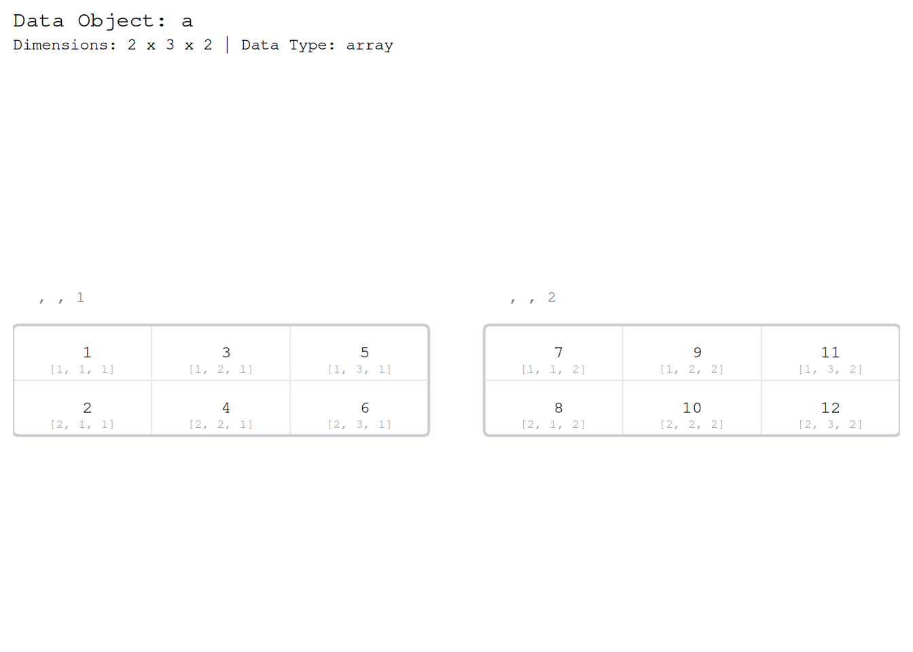
The cell in the second slice, first row, third column is labelled a[1, 3, 2] – row, column, slice, in the order R wants them. A student can copy that straight off the picture into the console and get the number it sits under. The picture and the accessor are the same statement.
Where to go next
For the full tour of all five structures and the arguments that shape each picture, see vignette("paintr", package = "paintr"). To turn any of these pictures into a “find the cell” exercise by shading the rows, columns, or values you are asking about, see vignette("highlighting", package = "paintr").